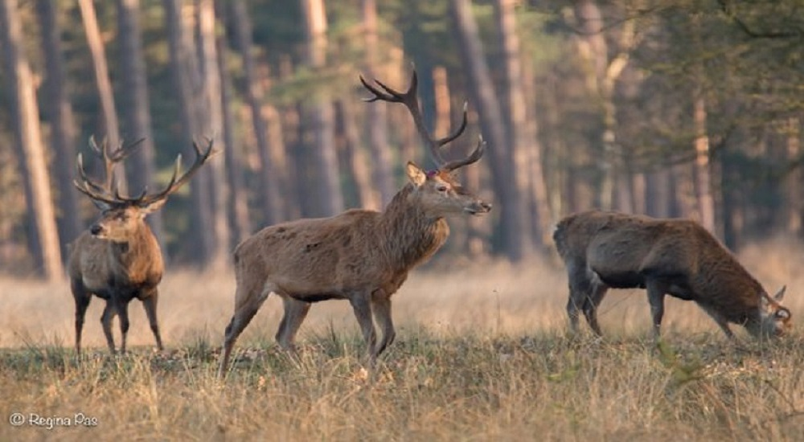
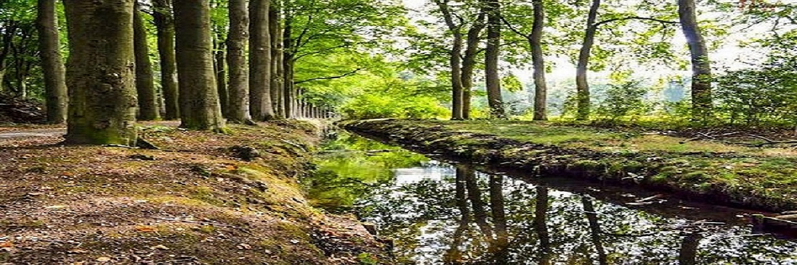
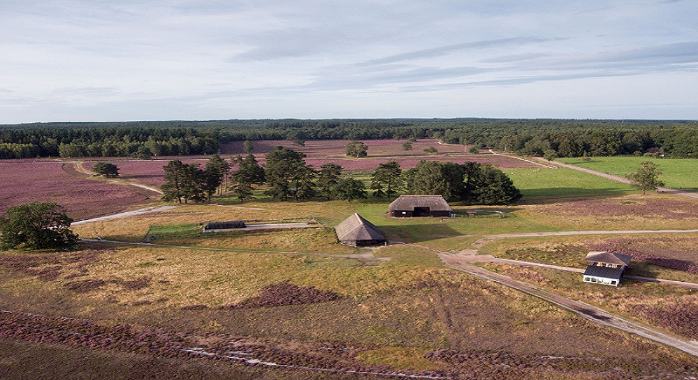
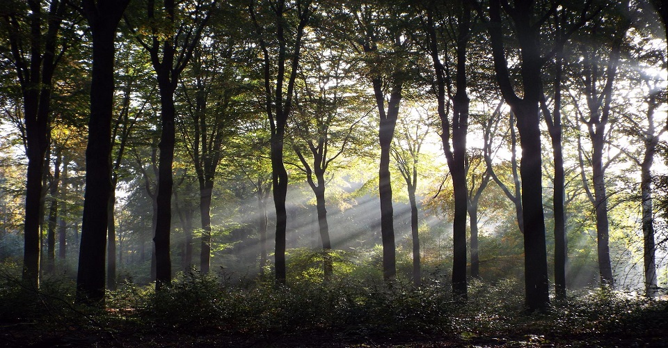

Lees de laatste artikelen over wildproeverijen, natuur en meer!

De bronsttijd is de tijd waarin edelherten de drang voelen om te paren. Dit wordt veroorzaakt door hormonale veranderingen in het lichaam van het dier. De bronsttijd begint met het vruchtbaar worden van de hinden.
07-08-2024
Lees meer
Onderzoeker Gregory Bratman van het Amerikaanse Stanford Woods Institute for the Environment, heeft wetenschappelijk aangetoond dat natuur een positieve werking heeft op ons brein. Ook andere wetenschappers komen tot vergelijkbare conclusies.
07-12-2023
Lees meer
Als je op de Veluwe komt dan zie je dat het vooral bestaat uit stuwwallen. Die stuwwallen zijn ongeveer 150.000 jaar geleden in de laatste ijstijd ontstaan...
07-12-2023
Lees meerRegelmatig hardlopen werkt goed tegen werkgerelateerde vermoeidheidsklachten...
07-12-2023
Lees meer
Het lijkt misschien vanzelfsprekend dat een flinke wandeling door een bos of in de bergen je lichaam, geest en ziel reinigt...
02-12-2023
Lees meer